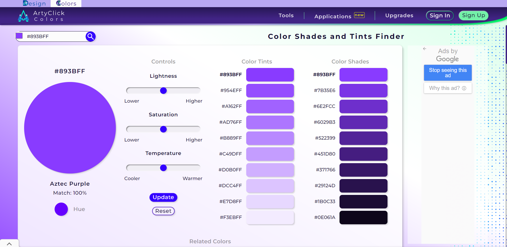

White Space and Clean Design
Google is the center of all the internet, it is the place that people go to surf the net (Meaning to navigate through the world wide website or internet), the google web page is one of the greatest example of whit space as it has a clean, this page has the basic role of white space this allows the design breath by reducing the amount of text and functional elements that users see at once.
Alignment
Takealo
takealot.comThis is Takealot website and we can see the principle of alignment there. Alignment brings order to elements and connects them, making content more organized and easier to view. On this site, due to the alignment,in the screenshot above we see how the page has a lot of elements even so due to Alignment all the elements come's together well for the viewer.
Hick's Law
Color Pllett
color.artyclick.com Color palette generator website are site that I believe show the Hick's Law as they present so many options just for one color making it difficult for one to decide.